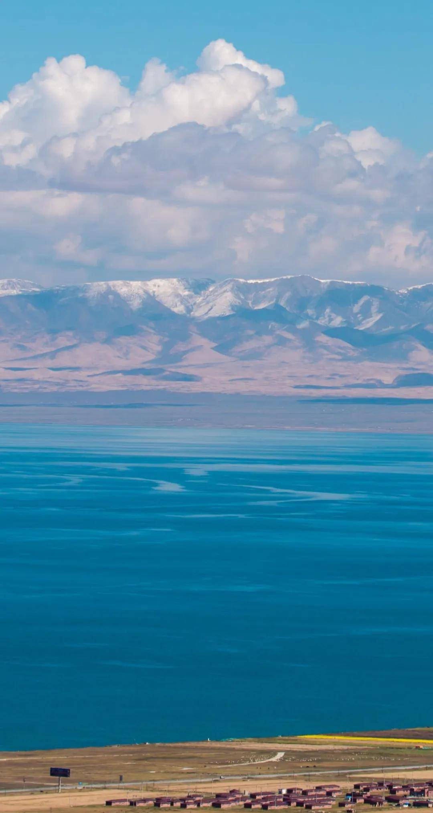

青海省，简称“青”，是中华人民共和国省级行政区，省会西宁。位于中国西北内陆。
青海省地势总体呈西高东低，南北高中部低的态势，西部海拔高峻，向东倾斜，呈梯型下降，东部地区为青藏高原向黄土高原过渡地带，地形复杂，地貌多样。青海省地貌复杂多样，五分之四以上的地区为高原，东部多山，西部为高原和盆地，兼具青藏高原、内陆干旱盆地和黄土高原三种地形地貌，属高原大陆性气候，地跨黄河、长江、澜沧江、黑河、大通河5大水系。
青海省地势总体呈西高东低，南北高中部低的态势，西部海拔高峻，向东倾斜，呈梯型下降，东部地区为青藏高原向黄土高原过渡地带，地形复杂，地貌多样。青海省地貌复杂多样，五分之四以上的地区为高原，东部多山，西部为高原和盆地，兼具青藏高原、内陆干旱盆地和黄土高原三种地形地貌，属高原大陆性气候，地跨黄河、长江、澜沧江、黑河、大通河5大水系。
因境内有国内最大的内陆咸水湖——青海湖而得名，简称青。
唐、宋属吐蕃；元朝其土地属宣政院管辖；明朝属朵甘都司等；清朝初为卫藏地，后分设西宁办事大臣，又称青海办事大臣，为青海得名之始。
民国初设青海办事长官，后属甘边宁海镇守使，之后建青海省，省名至今未变。

唐、宋属吐蕃；元朝其土地属宣政院管辖；明朝属朵甘都司等；清朝初为卫藏地，后分设西宁办事大臣，又称青海办事大臣，为青海得名之始。
民国初设青海办事长官，后属甘边宁海镇守使，之后建青海省，省名至今未变。
 《从军行》
《从军行》青海长云暗雪山，
孤城遥望玉门关。
黄沙百战穿金甲，
不破楼兰终不还！
《移家别湖上亭》
好是春风湖上亭，
柳条藤蔓系离情。
黄莺久住浑相识，
欲别频啼四五声。 《河湟书事》
《河湟书事》
阴山铁骑角弓长，
闲日原头射白狼。
青海无波春雁下，
草生碛里见牛羊。
他向上是霜雪，
一层又一层覆盖在脊梁之上。
他向下是盐粒，
禁锢着赤裸的双足。
他该生着双翼，
破圆日，破弯钩，
于是残影倒影在那宝石般美丽的青海湖上，
在历史的沉积中化成一粒又一粒碎珠，
点缀在山脉下，高原上。
好是春风湖上亭，
柳条藤蔓系离情。
黄莺久住浑相识，
欲别频啼四五声。
《河湟书事》阴山铁骑角弓长，
闲日原头射白狼。
青海无波春雁下，
草生碛里见牛羊。
他向上是霜雪，一层又一层覆盖在脊梁之上。
他向下是盐粒，
禁锢着赤裸的双足。
他该生着双翼，
破圆日，破弯钩，
于是残影倒影在那宝石般美丽的青海湖上，
在历史的沉积中化成一粒又一粒碎珠，
点缀在山脉下，高原上。